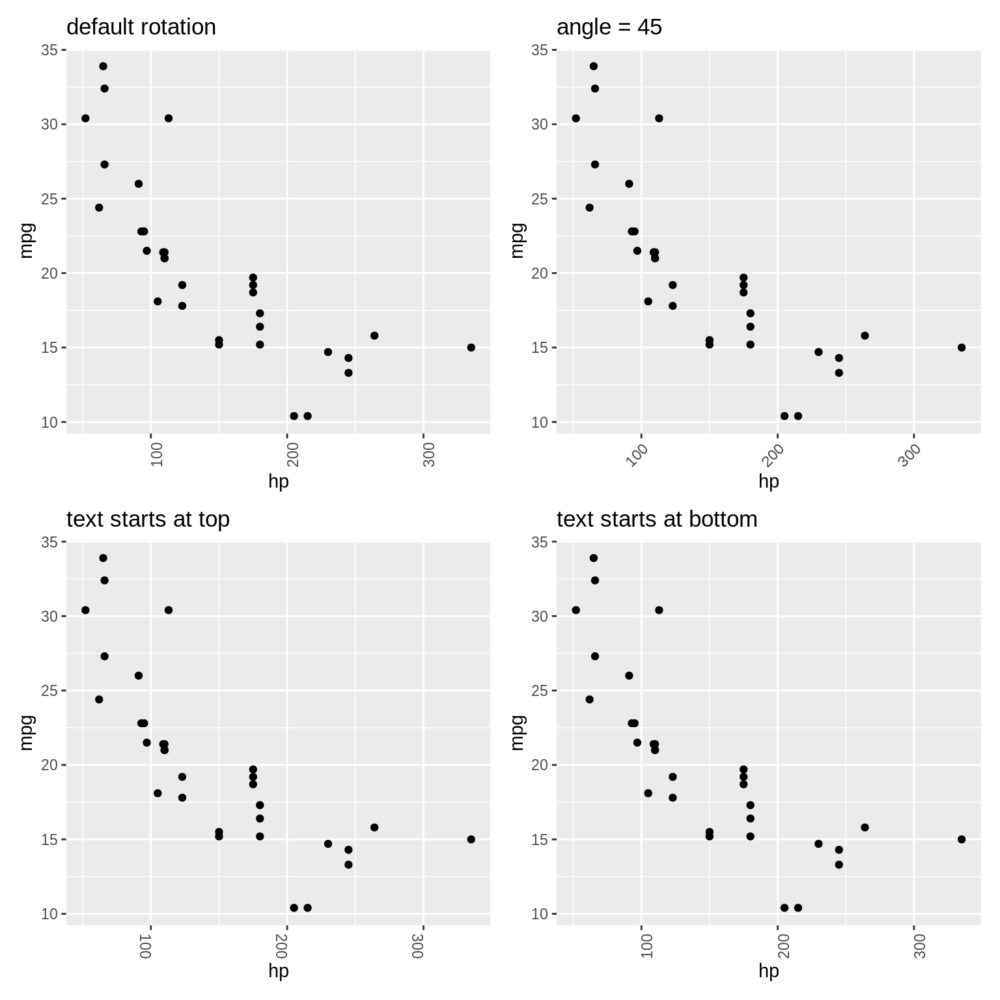
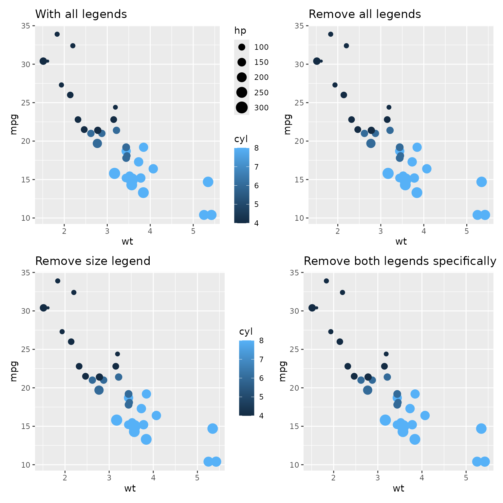
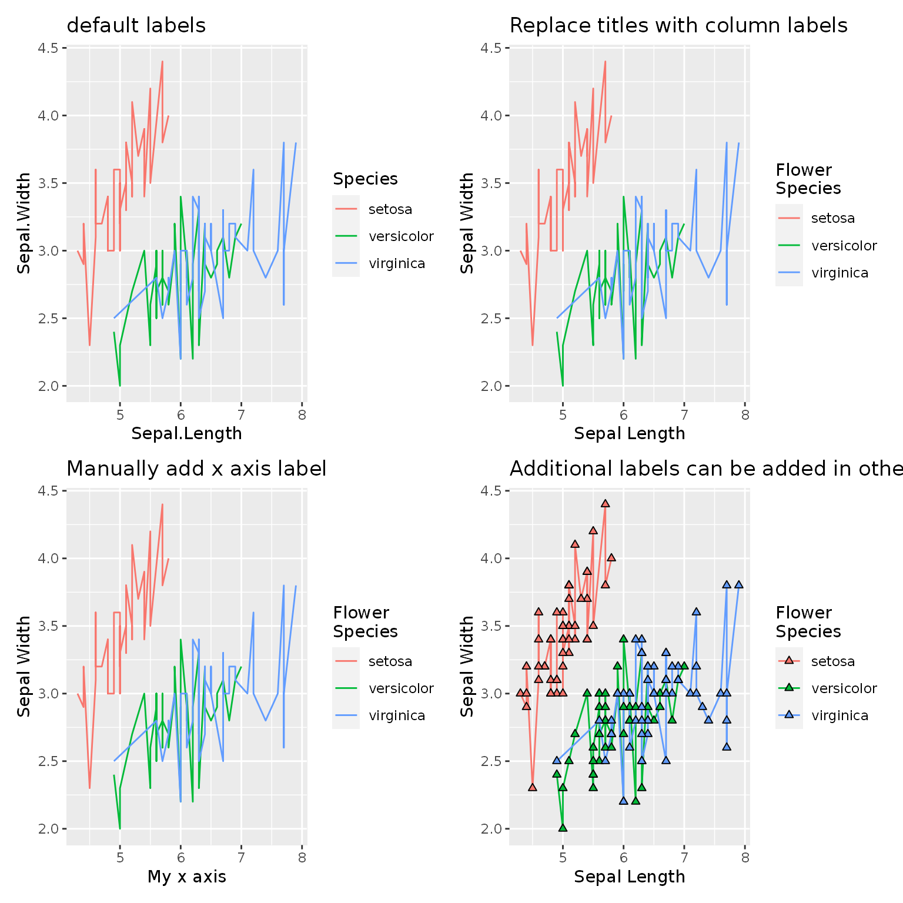
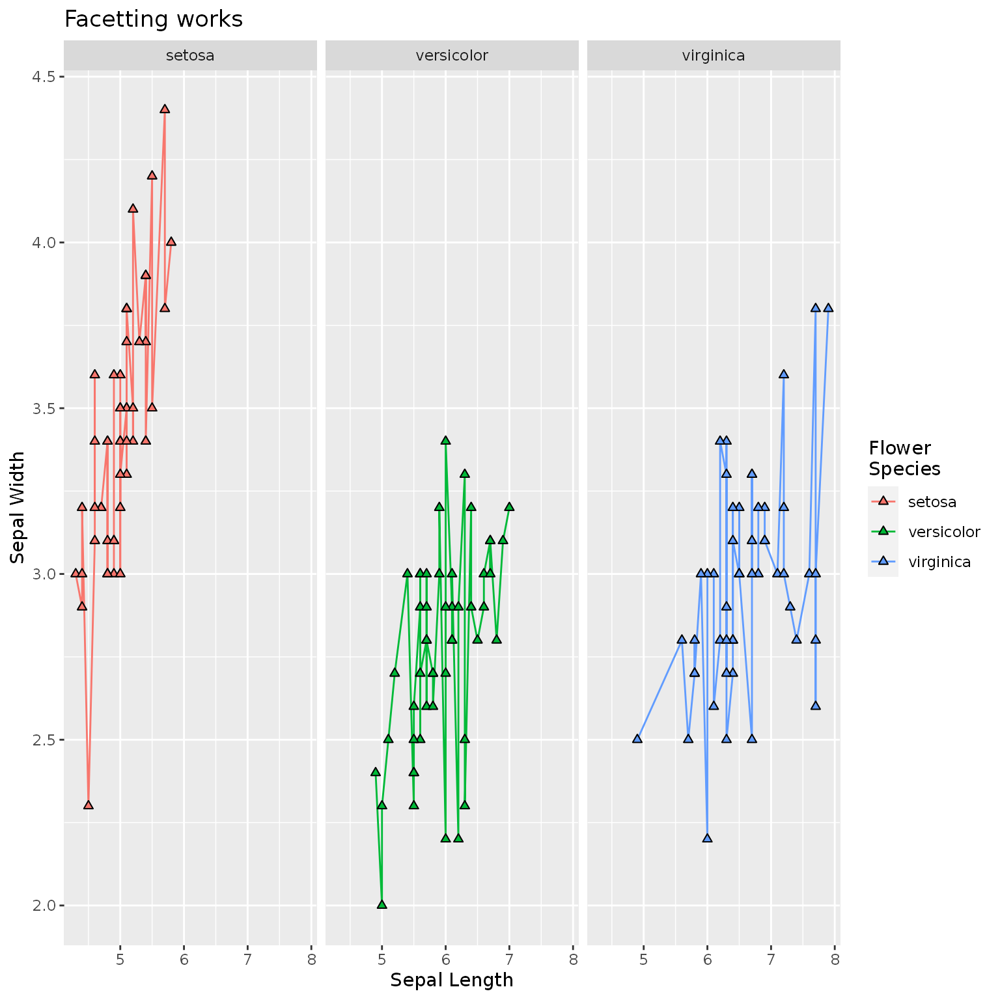

This package allows easy access to some common ggplot2 tasks.
Rotate Plot Labels
Rotating the x axis labels is a very frequently looked up task, and we can make it easier. If we create a simple ggplot2 plot
then by default, this looks like

We can perform various rotations though
p1 <- p +
easy_rotate_x_labels() +
labs(title = "default rotation")
p2 <- p +
easy_rotate_x_labels(angle = 45, side = "right") +
labs(title = "angle = 45")
p3 <- p +
easy_rotate_x_labels("startattop") +
labs(title = "text starts at top")
p4 <- p +
easy_rotate_x_labels("startatbottom") +
labs(title = "text starts at bottom")
(p1 + p2) / (p3 + p4)
Removing legends
Removing legends is made easier by the easy_remove_legend function. When called without arguments, all legends are removed (equivalent to theme(legend.position = "none")). Alternatively, the names of aesthetics for which legends should be removed can be passed.
p <- ggplot(mtcars, aes(wt, mpg, colour = cyl, size = hp)) +
geom_point()
p1 <- p +
labs(title = "With all legends")
p2 <- p +
easy_remove_legend() +
labs(title = "Remove all legends")
p3 <- p +
easy_remove_legend(size) +
labs(title = "Remove size legend")
p4 <- p +
easy_remove_legend(size, color) +
labs(title = "Remove both legends specifically")
(p1 + p2) / (p3 + p4)
Plot Labels
Changing plot labels to a specified string isn’t particularly difficult (labs(x = "my label")) but wouldn’t it be even nicer if you could just add labels to your data.frame columns (e.g. using labelled::var_labels()) and have these reflected in your plot. easy_labs() makes this possible.
## create a copy of the iris data
iris_labs <- iris
## add labels to the columns
lbl <- c('Sepal Length', 'Sepal Width', 'Petal Length', 'Petal Width', 'Flower\nSpecies')
var_label(iris_labs) <- split(lbl, names(iris_labs))These are visible if you use View(iris_labs) in RStudio

p <- ggplot(iris_labs, aes(x = Sepal.Length, y = Sepal.Width)) +
geom_line(aes(colour = Species))
p1 <- p + labs(title = "default labels")
p2 <- p +
easy_labs() +
labs(title = "Replace titles with column labels")
p3 <- p +
easy_labs(x = 'My x axis') +
labs(title = "Manually add x axis label")
iris_labs_2 <- iris_labs
var_label(iris_labs_2$Species) <- "Sub-genera"
p4 <- p + geom_point(data = iris_labs_2, aes(fill = Species), shape = 24) +
easy_labs() +
labs(title = "Additional labels can be added in other aesthetics")
(p1 + p2) / (p3 + p4)
easy_labs also extends to facetting
p4 + geom_point(data = iris_labs_2, aes(fill = Species), shape = 24) +
facet_wrap(~Species) +
easy_labs() +
labs(title = "Facetting works")